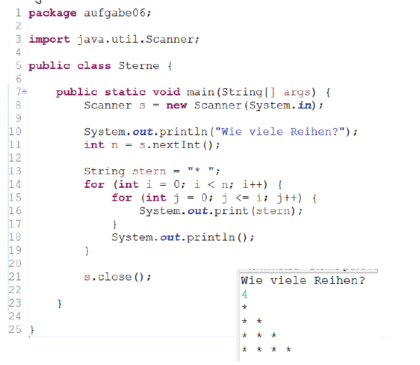

Übersicht
Das Modul "Strukturierte Programmierung" führt in die Grundlagen der Programmierung in Java ein. Es kombiniert Theorie und Praxis, um die Entwicklung systematischer und effizienter Algorithmen zu ermöglichen.
Inhalte
- Grundlagen der Programmierung: Variablen, Datentypen, Kontrollstrukturen.
- Methoden: Deklaration, Parameterübergabe und Rückgabewerte.
- Arrays: Arbeit mit eindimensionalen und zweidimensionalen Arrays.
- Fehlerbehandlung: Umgang mit Laufzeitfehlern und Debugging.
- Erweiterte Anwendungen: Bearbeitung von Notenlisten, Lotto-Simulationen und Zeichenketten.
Ablauf
- Theoretische Grundlagen:
- Einführung in die Syntax von Java und algorithmische Konzepte.
- Erarbeitung von Kontrollstrukturen, Methoden und Fehlerbehandlung.
- Praktische Übungen:
- Entwicklung eines BMI-Rechners und Taschenrechners.
- Programmierung von Array-Manipulationen und Simulationen.
- Arbeiten mit Dateien und JUnit-Tests.
Ziele des Moduls
Das Modul vermittelt die Grundlagen der strukturierten Programmierung. Ziel ist es, effiziente und korrekte Programme zu entwickeln und zu testen, sowie grundlegende Anwendungen zu erstellen.
Beispiel
Mittels verschachtelten for-Anweisungen schreiben Sie ein Programm, das das Sternchen in n Zeilen und in Form eines Dreieckes auf dem Bildschirm ausgibt. n ist eine positive ganze Zahl, die durch einen Scanner eingelesen wird.
